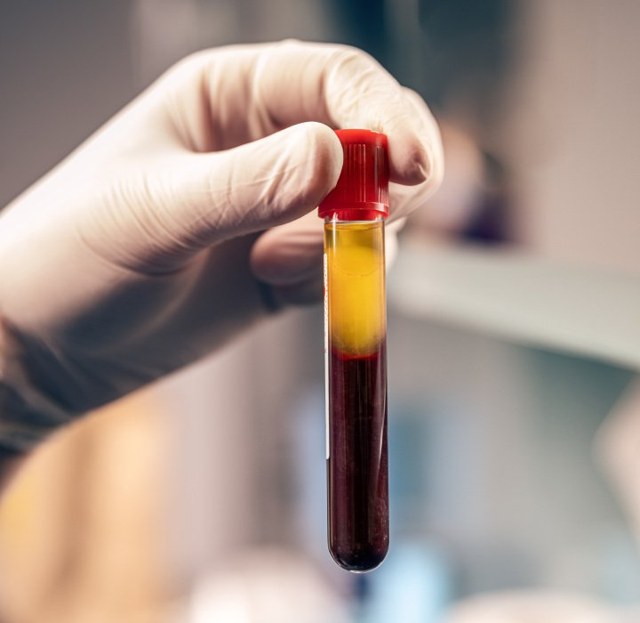

Centro prelievi
Bonaccorso Lab è il centro prelievi dello Studio Bonaccorso per gli esami della longevità. Puoi fare i prelievi per i tuoi esami del sangue direttamente in studio, nello stesso luogo in cui segui il tuo percorso di cura, e leggere i risultati insieme al medico.
Prenota il prelievo
Gli esami
Presso Bonaccorso Lab puoi effettuare i prelievi per:
- Esami del sangue di routine
- Check-up completi
- Profilo ormonale e tiroideo
- Esami della longevità
- Citochine infiammatorie
- Marcatori dell'infiammazione cronica
- Valutazione cardiovascolare
- Stress ossidativo
Le aree di indagine
Prelievi per esami del sangue
Esami ematochimici e check-up completi: ci dicono come stanno funzionando gli organi principali, il metabolismo e il sistema ormonale.
Prelievi della longevità
Pannelli avanzati sui marcatori dell'invecchiamento cellulare, organico, cerebrale, muscolo-scheletrico e cutaneo.
Infiammazione e citochine
Il dosaggio delle citochine infiammatorie permette di individuare un'infiammazione cronica anche quando non dà ancora sintomi.
Valutazione cardiovascolare
Profilo lipidico avanzato e marcatori del rischio cardiovascolare, per un quadro molto più preciso del solo colesterolo.
Perché gli esami del sangue sono importanti
In medicina funzionale gli esami del sangue sono il punto di partenza. Il sintomo non è un problema isolato, ma un segnale: per capirne le cause dobbiamo guardare a come funziona l'organismo nel suo insieme.
Molti squilibri, come un'infiammazione cronica di basso grado, un'alterazione del metabolismo o un aumento del rischio cardiovascolare, possono restare silenziosi per anni. Misurarli per tempo ci permette di intervenire prima, con strategie mirate di prevenzione, nutrizione e terapia.
Gli esami della longevità
La longevità non significa solo vivere più a lungo, ma vivere più a lungo in salute. Gli esami della longevità valutano i marcatori legati ai processi di invecchiamento e ci aiutano a capire a che punto è il tuo organismo e quali aree hanno bisogno di attenzione, per impostare un piano di prevenzione personalizzato.
L'infiammazione è una difesa naturale dell'organismo; quando però diventa cronica e silenziosa può contribuire nel tempo all'invecchiamento e a molti disturbi. Le citochine sono le molecole con cui le cellule del sistema immunitario comunicano tra loro: dosarle, insieme agli altri marcatori dell'infiammazione, permette di individuare uno stato infiammatorio anche quando non dà ancora sintomi evidenti.
Come funziona
Prenota
Prenota il prelievo online o per telefono: ti spieghiamo come prepararti, ad esempio se è richiesto il digiuno.
Vieni in studio
Il prelievo si svolge in studio, a Milano o a Roma, in un ambiente riservato e accogliente.
Leggi i risultati con il medico
Il medico ti spiega i risultati e li integra nel tuo percorso. Puoi anche programmare il prelievo prima della visita.
Presso lo Studio Bonaccorso gli esami da eseguire vengono sempre scelti dal medico in base alla storia clinica e agli obiettivi di ciascun paziente. Con Bonaccorso Lab prelievo, risultato e lettura insieme al medico si svolgono in un unico luogo, per costruire passo dopo passo un percorso di prevenzione davvero su misura.
Studio Bonaccorso è a disposizione per rispondere a tutte le domande.
Prenota il prelievo